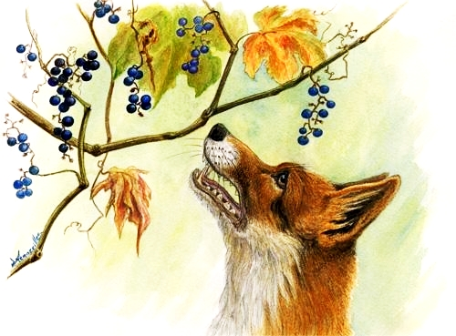

A raposa e as uvas

Certa ocasião, uma raposa se encontrava morta de fome, pois estava sem comer há dias. Andava por um pomar quando avistou um belo cacho de uvas.
As uvas negras estavam muito viçosas, maduras e prontas para serem apreciadas. Percebendo que estava sozinha e que o caminho estava livre, aprontou-se para colher aqueles frutos.
Não poupou esforços ao tentar pegá-las, empregou todos os seus conhecimentos e habilidades. Ainda que estivessem fora de seu alcance, não cessou as tentativas.